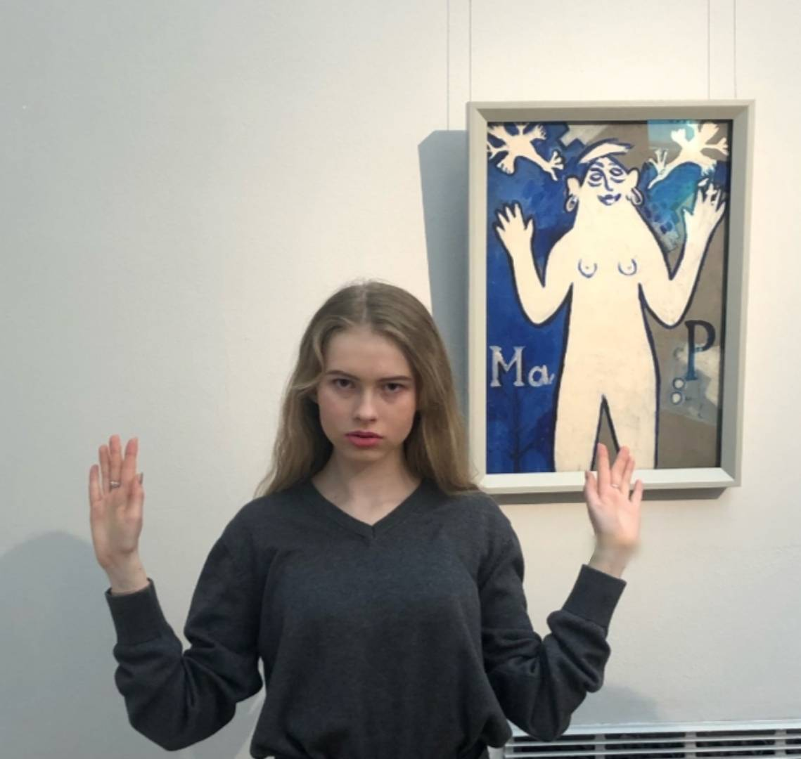
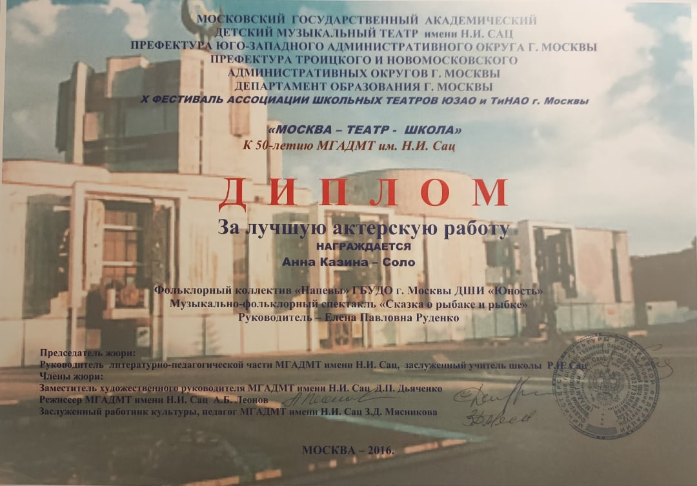

•Капитан команды-победителя олимпиады "Музеи, Парки, Усадьбы"
•Обладатель диплома за лучшую актерскую работу X фестиваля театра МГАДМТ им. Н.И. Сац "Москва-Театр-Школа"
•Участник VI Театрального фестиваля детских и юношеских спектаклей на иностранных языках "Smilles-2019"

